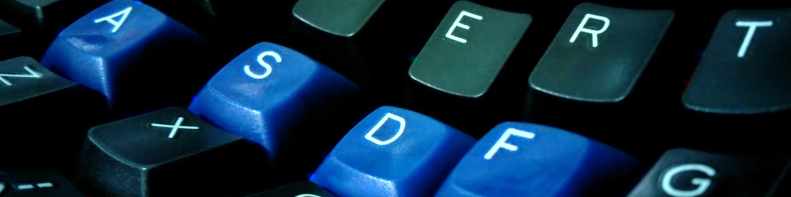

My Kinesis Advantage Layout

Table of contents
Why
One of the best investments a programmer can have is a good keyboard. What constitutes a good keyboard, however, can sometimes be a subject of debates. A common item that persists most lists is that it has be ergonomic. I add to that list an important quality: speed. No matter how ergonomic a keyboard is, if it falls on the speed category. It has to be comfortable, and speedy.
The Kinesis Advantage is the epitome of such a criteria. It is ergonomic, and it is fast. If you are already proficient typist, you’ll find that after the small adjustment period, you’ll type even faster with the Advantage. The default layout of the keys, however, turns me off. The Ctrl and Alt keys are too far to reach. This is important for users of software like Emacs, and shells like Zsh and Bash.
Throughout this post, we will be using the following legend:
ES Escape HO Home
TA Tab ED End
CL Caps Lock PU Page Up
SL Scroll Lock PD Page Down
SH Shift EN Enter
lCT Left Ctrl SP Space
rCT Right Ctrl DE Delete
lAL Left Alt PS PrintScr
rAL Right Alt KE Keypad Enter
BS Backspace KP Keypad
IN Insert PR Progrm
Before
When using Dvorak emulation, the following is how the keys are mapped:
Original Software Dvorak
{kind=link}
Yuck. Using this layout on Emacs, or shell, is painful to the hands, especially on prolonged periods. To press M-x, one would have to press the Alt key with the right thumb, then the x key with the left index finger. Reaching out for the Esc keys isn’t a lot of fun, either, because it’s too far.
After
I remapped some of the keys, to fit my workflow. The new layout is as follows. The mapping is initiated by pressing PR +F12. Please check with the manual for other remapping-related information.
Remapped Software Dvorak
{kind=link}
I used Insert in lieu of Esc, so that I can easily access the XA_PRIMARY selection using Shift + Insert. The XA_PRIMARY selection is where your mouse highlights go. It also makes it easy to enter Emacs’s overwrite-mode. The Insert key, however, is buried in the key physically marked with |, on the left side. The sequence to access it is listed at end of this post.
The new location of Ctrl and Alt makes it easy for the fingers to reach them. I swapped the location of Up and Down with Left and Right. I wanted to be able to scroll through a webpage without having to use my right hand with the mouse wheel. Page Up and Page Down were also moved to enable equal load distribution for two hands.
One of my favorites is the new location of the [ and ] keys. I also like the new location of the Esc key—this allows me to easily hit the Esc key when using vi, or to close dialog boxes.
Setup
The + indicates pressing and holding a key, while pressing another. The ➔ is read as “to”, for example, PU ➔ HO is read as “Map PageUp to Home”. The , indicates a sequence of keys pressed and released, in order.
PR + Shift + F10
PR + \
PR + -
PR + F12
ES ➔ CL
CL ➔ SL
LE ➔ UP
RI ➔ DN
UP ➔ LE
DN ➔ RI
HO ➔ ED
ED ➔ PD
PU ➔ HO
PD ➔ PU
lCT ➔ `~
lAL ➔ \|
rCT ➔ ]}
rAL ➔ [{
-_ ➔ lCT
=+ ➔ rCT
]} ➔ rAL
`~ ➔ =+
r\| ➔ -_
[{ ➔ l\|
KP, IN, KP ➔ ES
KP, KE, KP ➔ lAL
The KP_Enter (KE) key was moved to Left Alt (lAL) so that I can easily use it as a Compose (Multi) key in X. My ~/.Xmodmap contains the following:
keycode 104 = Multi_key

This work by Rommel M. Martinez is licensed under a
Creative Common Attribution 4.0 International License.